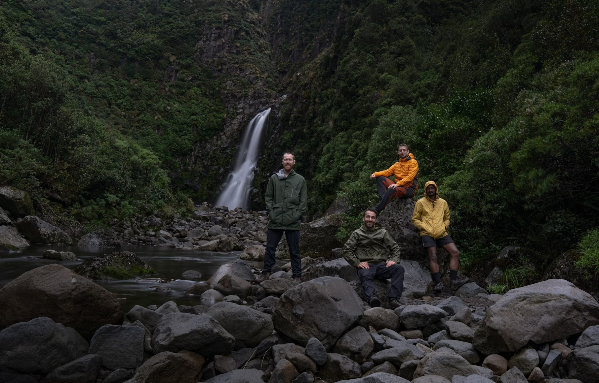

Rainy Days has over 25 years of experience in the design and development of waterproof clothing adapted to Nordic conditions. We are a Danish brand with head office and warehouse in Copenhagen and stores all over Scandinavia. We have the pleasure of serving travel-happy Scandinavians through our large online store.
Most of us in Rainy days have one more thing in common: we like to be out on small and large trips, because fresh air and nature give so much positive return. We therefore want to spread the joy of hiking to everyone.
By emphasizing design, practical solutions and mid-range prices, Rainy Days has developed hiking clothing, hiking equipment and shoes that enable the whole family to be well dressed on small and large trips in all kinds of weather. Rainy Days also supplies clothing and equipment to both large and small businesses.
Ever since its inception in 2013, Rainy Days has had a great commitment to society. 25% of all those recruited must be people who often struggle to fit into working life. Rainy Days has open factory lists and was the first sports and textile wholesaler to be included in the Initiative for Ethical Trade in 2015.
We work actively to reduce the climate and environmental impact associated with our business and have developed a number of products that are made from recycled materials.
In 2016, Rainy Days became Europe's first sports and textile brand to introduce a deposit on used hiking clothing, and since then you have been able to hand in your used Rainy Days clothing.
What is Rainy Days goal?
Rainy Days goal is to make the world a slightly better place.
Also to produce the clothes that are mid-range in price and emphasize durability and being suitable for a range of different weather types ensuring customers are comfortable whatever adventure they go on.
What is Rainy Days vision?
Rainy Days vision is "walking pleasure for all". That's why we say that "small trips are also big". It doesn't matter if you're climbing the highest mountains or just taking a short walk in your neighbourhood. The most important thing is to get out into the fresh air. It is good for both body and mind.
What is Rainy Days values
Rainy Days values are "sustainable, inclusive and innovative".